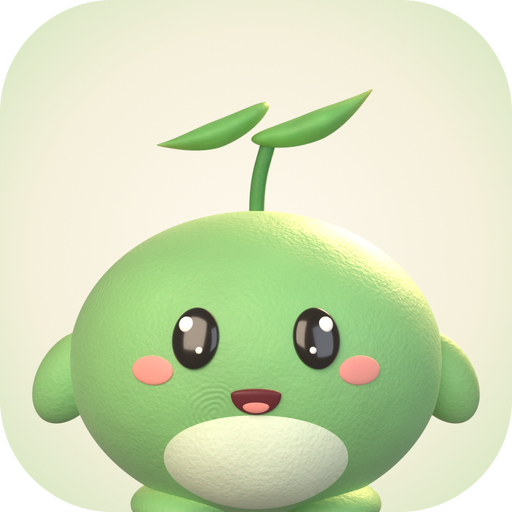
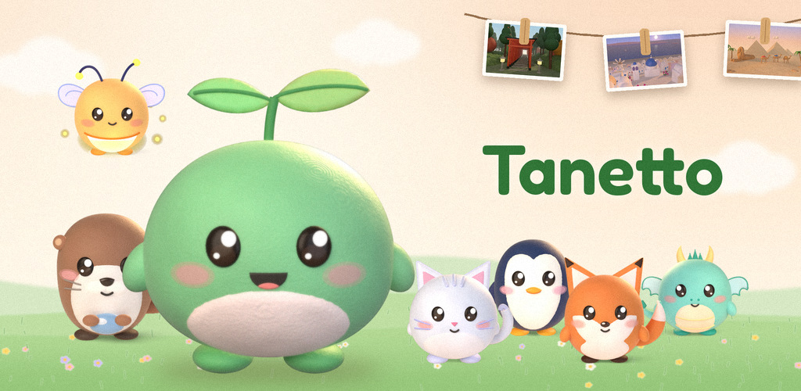
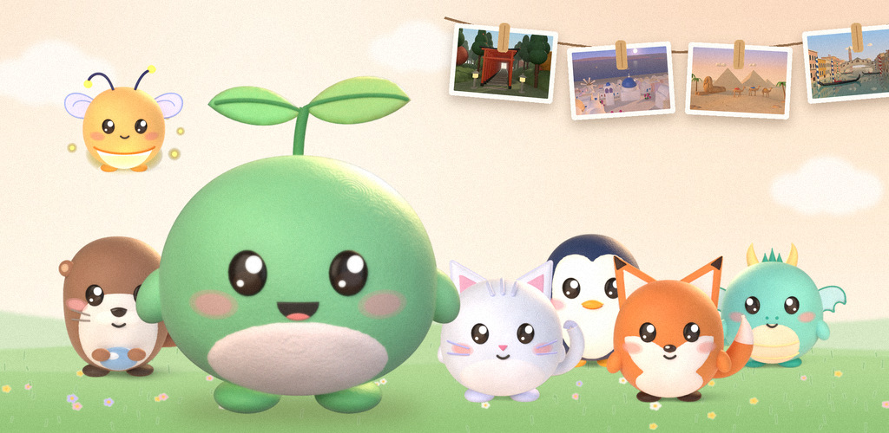

Tanetto press kit
A cozy self-care habit app with a little 3D companion. Small habits, big trips.

Fact sheet
All dates are DD/MM/YYYY.
- What it is
- A cozy self-care habit app with a little 3D companion, for Android.
- In one line
- Take care of yourself one tiny step at a time, and watch a little friend grow with you.
- Developer
- Snugbloom Studio, a one-person studio in Italy.
- Platform
- Android 7.0 and later, on Google Play. A version that runs in the browser is on the website.
- On Google Play since
- 10/11/2026 (version 1.0.8).
- Current version
- 1.0.9: all seven companions rebuilt in a soft, clay-like 3D style, a shorter start, and each companion's own celebrations.
- Price
- Free to download. Optional Tanetto Plus subscription (in Italy €5.99 a month or €39.99 a year, the yearly plan with a 7-day free trial; local prices on Google Play) and optional packs of Tanì, the in-app coins.
- Ads
- Only reward videos that the user chooses to watch, up to 5 a day, and only after the first goal of the day. No ads with Plus. For children and for anyone who skips the age question, ads are not personalised and are rated G.
- Languages (14)
- English, Italian, German, Spanish, French, Portuguese (Brazil), Japanese, Korean, Simplified Chinese, Traditional Chinese, Russian, Polish, Dutch, Turkish.
- Who it's for
- Everyone, families included.
- Account
- Not needed. An optional account (Google or email) backs up progress for free. Accounts are only for people old enough to agree to it under the privacy law of their country (13 to 16, depending on the country).
- Companions
- Germo the sprout, Ondi the otter and Lumi the firefly are included for everyone. Miko the kitten, Rufi the fox, Pingo the penguin and Dori the little dragon come with Plus.
- How it works
- Pick 3 to 8 tiny goals a day (a glass of water, a short walk, a few pages, an early night) and tick each one with a tap. Your companion gets energy and Tanì; with enough energy it travels to a real place and sends you a postcard for your album.
- Also inside
- A cozy room to decorate, outfits, a mood journal with a question of the day, guided breathing, letters to your future self, small games and a home-screen widget.
- Kind by design
- No guilt. Rest days are allowed, streak shields cover busy days, and coming back after a break brings a warm welcome.
- Seasons and events
- A new season every two or three months, each with its own path and rewards: the Season of Lanterns until 31/12/2026, the Season of Stars from 01/01/2027 and the Kite Season from 01/03/2027. Christmas runs from 08/12 to 06/01.
- Accessibility
- Larger text and a calm mode with less motion.
- Privacy
- Goals, journal and companion stay on the phone unless the user chooses to back them up. Privacy policy: tanettoapp.github.io/Tanetto/privacy.html
- Not a medical service
- Tanetto is a wellbeing and habit app and does not replace professional help.
- Press contact
- tanettoapp@gmail.com
Short description
Tanetto is a cozy self-care app for Android. Pick a few tiny goals a day, tick them off, and a little 3D companion grows, decorates its room and travels to real places, sending you postcards. Rest days are fine. No guilt.
Long description
Tanetto turns small acts of self-care into a little adventure. Each day you pick 3 to 8 tiny goals, like drinking a glass of water, stepping outside for five minutes or going to bed a bit earlier. Every goal you tick gives your companion energy and coins. When it has enough energy, it packs a suitcase for somewhere real, like London or the Grand Canyon, and sends you a postcard for your album.
The app is built around one rule: never make people feel bad. Rest days count, streak shields cover the busy days, and coming back after a break gets you a warm welcome.
Tanetto is free to download, in 14 languages. The only ads are reward videos you choose to watch, and the optional Plus subscription adds four more companions and a trip around the world.
The story
Tanetto is made by one person in Italy. It started as a web app in October 2026, went through a closed test on Google Play, and some of its kindest rules came from the testers: shorter trips for busy days, a Skip button in the first steps and fewer goals to choose from at the start.
Images
You're welcome to use these images to write about Tanetto. Please don't edit the characters.
Brand

Download 1024 × 1024 · 1.026 KB

Download 1024 × 500 · 161 KB


Download 1024 × 500 · 163 KB
Companions

Download 512 × 512 · 150 KB

Download 512 × 512 · 143 KB

Download 512 × 512 · 144 KB

Download 512 × 512 · 151 KB

Download 512 × 512 · 147 KB

Download 512 × 512 · 137 KB

Download 512 × 512 · 138 KB
Moments

Download 512 × 512 · 114 KB

Download 512 × 512 · 124 KB

Download 512 × 512 · 136 KB

Download 512 × 512 · 127 KB
Postcards

Download 1200 × 800 · 83 KB

Download 1200 × 800 · 82 KB

Download 1200 × 800 · 73 KB

Download 1200 × 800 · 74 KB

Download 1200 × 800 · 77 KB

Download 1200 × 800 · 101 KB
Seasons

Download 1200 × 600 · 73 KB
Contact
Press: tanettoapp@gmail.com. Tanetto Plus codes for reviews are available on request.
Snugbloom Studio, a one-person studio in Italy.